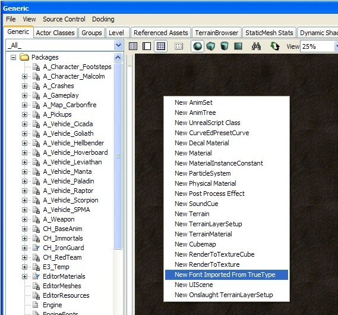

UDN
Search public documentation:
ImportingFontsJP
English Translation
中国翻译
한국어
Interested in the Unreal Engine?
Visit the Unreal Technology site.
Looking for jobs and company info?
Check out the Epic games site.
Questions about support via UDN?
Contact the UDN Staff
中国翻译
한국어
Interested in the Unreal Engine?
Visit the Unreal Technology site.
Looking for jobs and company info?
Check out the Epic games site.
Questions about support via UDN?
Contact the UDN Staff
UE3におけるフォント作成
ドキュメントの概要： true typeフォントのインポート方法。 ドキュメントの変更ログ：Joe Graf により作成、Maury Mountain によりアップデート。Richard Nalezynski? により管理。TrueTypeフォントをインポート
ステップ1 - 新しい資産を作成する

汎用ブラウザのビューペーン上で右クリックし、上の図に示されたとおり[New Font Imported From TrueType]メニューオプションを選択します。これにより、下図の新しい資産ダイアログが作成されます。
ステップ2 - インポートするフォントを選択する
上の図で示されたダイアログの一番下に、[フォント選択]ボタンがあります。このボタンを使用して、どのフォントをインポートするかを目で確認しながら選択します。ボタンの横にあるテキストは、選択したフォントを反映して変更されます。そのため、選択による結果を確認することができます。ステップ3 - 文字セットオプションを設定する
以下の表は新しいフォントをインポートするためのオプションを示しています。| オプション | 用途 |
|---|---|
| USize | 生成されたテクスチャの幅をピクセルで指定 |
| VSize | 生成されたテクスチャの高さをピクセルで指定 |
| XPad | 文字間のX軸スペースをピクセルで指定 |
| YPad | 文字間のY軸スペースをピクセルで指定 |
| AntiAlias | 生成されたテクスチャデータのアンチエイリアシングを有効にするかどうかを指定 |
| Chars | どの文字をそのフォントで生成するかを指定するために使用されます。このオプションは、フォント全体を生成しない場合、またはどの文字を使用するかを制御したい場合に便利です。 |
| Wildcard | パスと組み合わせて使用されます。特定のディレクトリからファイルを選択するときに使用するパターンを指定します。 |
| Path | フォントに含める文字セットとして1つ以上のファイルを指定するために使用されます。ローカライゼーション用のフォントを生成しているときに、そのフォントに必要な文字のみを含めることができます。これによって、使用するローカライゼーションファイルを指定すると、必要な文字のみが生成されます。 |
| Style | 1000ピクセルあたりのインク付けされるピクセル数を指定。通常の場合は400、ボールドの場合は700を使用。 |
| Italic | イタリックを使用してフォントを作成するかどうかを指定 |
| Underline | 下線を有効にしたり、しなかったりしてフォントを作成するかどうかを指定 |
| bCreatePrintableOnly | プリント不可の文字をフォントから削除するかどうかを指定。制御文字をフォントから削除することで容量を節約 |
| bUseSymbolCharSet | フォントをシンボルセットとしてインポートするか、文字セットとしてインポートするかを指定 |
| ExtendBox | 1 文字ごとにテクスチャ UV をどれだけ押すかをピクセルで指定 |
Wildcard (ワイルドカード)
Wildcard (ワイルドカード) テキスト ファイルは、文字を含むファイルであり、インポータがコンテンツを読み取り、ファイル内に含まれる文字のみをインポートするように、インポータをポイントするものです。それに対し、FilePath は、テキスト ファイル (ワイルドカード) が入っているディレクトリをポイントする単なるパスです。 これを使用するには、文字ファイル パスとワイルドカードは以下のようでなければいけません。CharacterFilePath=C:\FileName\FileName CharacterFileWildcard=YourTextFile.txtwindows のテキスト ファイルへの実際のパスは以下のようになります。
C:\FileName\FileName\YourTextFile.txt以下が、インポートとプロパティのセットアップのステップです。
-
C:\FontPathという名前のフォルダを作成し、そのフォルダにFontChars.txtと呼ばれるテキスト ファイルを入れます。 - ワイルドカード文字テキストを FontChars.txt テキスト ファイルに貼り付けます。
- FontChars.txt テキスト ファイルを UNICODE (例えば Windows のメモ帳を使用して) として保存します。
- UnrealEd を開き、Generic ブラウザで右クリックをして、_New Font Imported from TrueType (TrueType からインポートされた新しいフォント)_ を選択します。
-
FontNameを Arial Unicode MS のようなものに設定します。 - 以下のプロパティを設定します。
-
bCreatePrintableOnlyを true に設定 -
CharsFilePathを C:\FontPath に設定 -
CharsFilePathを C:\FontPath に設定 -
TexturePageMaxHeight= # -
TexturePageWidth= # - パディング/拡張ボックスの値を設定
-
- フォント + サイズを選択
- インポート
bCreatePrintableOnly flag とファイルパス & ワイルドカードを忘れないように設定してください。チェックボックスが適切に設定されていないと、文字が適切にインポートされないという問題に直面する場合があります。
備考: Wildcard 入力に加えて、Character File Path が使用されなければいけません。File パスはファイル名を含まず、ファイルへのパスのみを含むべきです。また、インポートしたい UNICODE 文字を含んでいるテキスト ファイルが UNICODE として保存されていることを確認してください。ファイルは、Oxfffe ヘッダを持っているはずです。そうでない場合、警告なしに失敗することがあります。UTF-8 形式で保存されたフォント文字ファイルは、現在サポートされていません。
ワイルドカードの例
以下が汎用の文字リストです。ラインの冒頭のスペースは、意図したものです。1 つは通常のスペースで、もう 1 つはフランス語のものです。 英語:
!"#$%&'()*+,-./0123456789:;<=>?@ABCDEFGHIJKLMNOPQRSTUVWXYZ[\]^_`abcdefghijklmnopqrstuvwxyz{|}~
拡張:
€„ˆ‹Œ‘’“”–—˜™›œ¡¢£¨©ª«®°²³´¹º»¿ÀÁÂÃÄÅÆÇÈÉÊËÌÍÎÏÑÒÓÔÕÖØÙÚÛÜßàáâãäåæçèéêëìíîïñòóôõöøùúûüýÝ¥§Ÿ…ワイルドカードの使用は、インポートしたいすべての文字が存在する (フォントがサポートするのならば) ことを確かにします。上記の文字でインポートした後に、まだ 3 点リーダー文字がない場合は、TTF ファイルに存在していない可能性があります。
Extendbox
ExtendBox の数が非常に大きいと、余計な文字が描かれる原因となります。また、イタリック フォントでクリッピングが起きている場合は、これを使用して直すことができます。=ExtendBox= は Padding (X または Y) とは違い、Padding は入力された数に基づいて、テクスチャ シート上で文字にスペースを入れるのに対して、=ExtendBox= は文字の 2D UV 座標のみを移動させます。
ExtendBox を使用する際には、 e 文字が使用されているのに d 文字レンダリングの半分にならないようにするためにも、Padding を追加するのが良いでしょう。
場合によっては、特定の小文字や - などの特殊文字が、ベースラインではなくキャップラインに位置していることに気付くかも知れません。実際のテクスチャでの文字位置はそうあるべきもので、ゲーム内ではこのように表示されません。これは、フォントをインポートする際に全体のテクスチャ使用量を節約するための最適化であり、テクスチャ自身のみにしか存在しません。
カーニングに関しては、フォントのデフォルトのカーニング値を設定することができますが、実際のフォント自体のレディングは設定できません。
現時点のインポートに基づいたテクスチャを外部から調整する場合は気を付けてください。UV はテクスチャを変更しても変わらず、結果的にテクスチャがカットされるような問題の原因となります。その代わりに、フォントを再インポートし、=bEnableLegacyMode= チェックボックスにチェックをすると、(以前のエンジン内のものと) 似たようなベースラインを持つ文字をインポートすることができます。
フォント プロパティ
汎用ブラウザのフォントをダブルクリックすると、フォントプロパティ ウィンドウが表示されます。このウィンドウには、フォントページをプレビューおよび変更するための一連のオプションが表示されます。フォントページは左の枠内に表示されます。スクロールバーを使用して、2ページ以降を表示できます。エクスポート/更新 オプションを使用する前に、ページを選択しておく必要があります。
既存のフォントを修正する
フォントページが生成されれば、それを修正することができます。フォント生成時に、文字が割り当てられたスペースを超えるか、または余分なピクセルが文字に追加される場合があります。このような場合、アーティストはフォントページをエクスポートして、ペイント プログラムでクリーンアップすることができます。フォントページをエクスポート/インポートするには、フォントプロパティ ダイアログを使用します。まず、エクスポートしたいページを選びます。次に、[エクスポート]ボタンをクリックし、次にページのエクスポート先となるディレクトリに移動します。エクスポート/インポート プロセスでは、厳しい命名規則を使用しており、次の通りです。 FontName_Page_#.tga アップデートプロセスは、置換するページを判定するために名前を使用します。そのため、フォントページのファイル名を 変更しないでください 。 [更新] ボタンをクリックすると、選択されたフォントページの代わりに1つのファイルをインポートします。 [すべてを更新] オプションを選択すると、TGAファイルのディレクトリをスキャンし、命名規則に一致するファイルを検出します。これらのファイルは自動的にインポートされ、既存のフォントページを置換します。 [エクスポート] ボタンをクリックすると、上記の命名規則を使用して選択されたフォントページをTGAファイルにエクスポートします。 [すべてをエクスポート] をクリックすると、すべてのフォントページを上記の命名規則を使用して指定されたディレクトリにエクスポートします。フォント プレビュー
UE3内でフォントがどのように表示されるかを確認するには、フォント プロパティ ダイアログの[プレビュー]ボタンを使用します。これにより、下図のようなフォント プレビュー ダイアログが表示されます。このダイアログは、ゲーム中と同じコードを使用してテキストをレンダリングするため、ゲームを実行しなくてもスペースの問題をチェックすることができます。これによって、ローカライゼーション パスの間の反復時間が速くなります。編集コントロールにテキストを入力すると、プレビューエリアに表示されます。様々な設定でフォントがどう表示されるかを確認するために、テキストと背景の色を変更できます。
Linespacing
UI コンボ、または/そして Text スタイルで、フォントを水平に、または垂直に間隔をあけることができます。スタイルを "custom (カスタム)" を使用するように変更すると、左よりの真ん中のエリアに、”Chars (文字)” というセクションがあります。カーニングとラインの高さをここで編集することができます。 UI Style を使用することにより、フォントのテクスチャを小さくして、複数のフォントをインポートする必要がなくなります。 さらに、必要に応じて、ウィジェットごとやシーンごとにスタイルをオーバーライドできます。ウィジェットのプロパティの Components (コンポーネント) -> StringRenderComponent、StyleOverride で、"Spacing Adjust (スペーシング調節)" の隣のボックスをチェックすると、これらのフィールドの数を変更することができます。Style Override (スタイル オーバーライド) を使用すると、そのウィジェットのみに影響を与え、常にそのウィジェットに影響を与えるようになります。東洋言語のフォント (アジア言語とアラビア語)
ラテン語ベースのフォントと似ていますが、アジア言語のフォントをインポートするには以下のステップに従ってください。- New Font Imported From TrueType (TrueType からインポートされた新しいフォント) を選択します。
- New Font (新しいフォント) ダイアログで、UI Texture Group (UI テクスチャ グループ) にデフォルト設定である AntiAlias と LODGroup を使用します。
22-39,127-514,654-819'フォントの交換のために、"Fonts_JPN"、"Fonts_KOR" のようなアジア言語フォントのもう 1 つのパッケージを作成しなければいけません。そのパッケージの中で、フォント名はメインのフォント パッケージと*完全に*マッチする必要があります。言語が日本語に変更されると、デフォルトのフォント パッケージも変更されるはずです。ここで最も重要なのは、これら 2 つのパッケージが、フォント オブジェクトの中に含まれるテクスチャ以外は、まったく同じであることです。 例えば、フォントに "Mainfont" という名前がついていたら、パッケージは以下のようにセットアップされます。
Fonts.Mainfont Fonts_JPN.Mainfont などデフォルト フォント パッケージが、_JPN のものに変更されると、すべてのスタイルは、もう 1 つのパッケージの代わりに 'Mainfont' を使用します。これは、西洋の文字セットでも同様です(日本語は、英語で読み込まれません)。 フォントのサイズは、ゲーム内のダイアログ/テキストや文字セットに、どれぐらいユーザーがアクセス可能かに非常に大きく依存します。ゲーム テキストに基づいた上記のインポート方法を使用して、ユーザー入力/多くのダイアログを必要とする/可能であるようなコンピュータ端末インターフェース次第で、これは最小量になったり、膨大になったりします。 比較として、Gears 1 JPN フォント パッケージは、約 5.5MB ありました (もっとも大きなタイプのサイズが 1-1.3MB でした)。マルチフォントにいくつのレベルがあるかによって、何とかなるかも知れませんが、ファイル サイズは大きくなるでしょう。1 つの言語にマルチフォントを使用して、他の言語に使用せずにいると、バージョン間でビジュアル的な異常が起きる場合があります。この事象は、これを行わなければ、顕著にはなりません。 アジア言語フォントをライセンスしていると、2 つのフォント フォーマットで出荷されている場合があります。1 つは @ が接頭辞として付いているもので、もう 1 つは付いていないものです。@ マークは、おそらくフォントとしてインポートしようとしているものであり、このおかげでリストのトップに現れるので、選ぶのが簡単になります。しかしながら、@ のバージョンは、垂直のテキスト出力に使用されます。実際のテキスト表示が 90 度別の方向に回転されるので、文字が一方向に 90 度回転し、フォントは以下のようになります。
L I K E T H I S伝統的には、アジア言語はこのように―上から下へ、そして右から左へ―読まれるものです。必要なのは左から右へのバージョンですが、これは、@ の接頭辞なしのフォント名を探せば、すぐに見つかるはずです。
MultiFonts
MultiFonts は異なる解像度でも、フォントが解像度非依存となります。 汎用ブラウザ リファレンスのビュー ペインで、右クリックをして New MultiFont (新しい MultiFont) メニュー オプションを選択してください。これで、MultiFonts の新しい資産ダイアログが作成されます。 新しい MultiFont をインポートするには、=ResTests= とResHeights 配列を記入するのみです。どちらの配列も同じ数値を含んでいなければいけません。各 ResTests 要素は、もっとも近い縦割りのディスプレイ解像度で、=ResHeights= の高さに対応した文字セットが使用されます。
例えば、3 つの解像度をサポートする MultiFont をインポートするには以下の通りです。
ResTests[0] = 480.0 ResHeights[0] = 16 ResTests[1] = 720.0 ResHeights[1] = 24 ResTests[2] = 1080.0 ResHeights[2] = 32ゲームが 1280x720 で起動している場合、ポイント サイズ 24 で焼き出された文字ビットマップを使用して、エンジンは自動的にレンダリングをします。どのグリフ セットを使用するかを決定する際には、縦割りの画面解像度のみを見ていることに留意してください。また、テクスチャ サイズに大きすぎるポイント サイズ値が使用されると、メモリ/オーバーランによるクラッシュが起きるので、適度なポイント サイズ値を使用するように気を付けてください。
カスタム フォント
"-" のような文字や、小文字は、ベースラインでなく、キャップラインに置かれます。実際のテクスチャでの文字位置はそうあるべきもので、ゲーム内ではこのように表示されません。これは、フォントをインポートする際に全体のテクスチャ使用量を節約するための最適化であり、テクスチャ自身のみにしか存在しません。 フォントのデフォルトのカーニング値を設定することができますが、実際のフォント自体のレディングは設定できません。 また、フォント (UISkin 内で) を、スタイル内でセットアップすると、スタイルごとにユニークなカーニング/レディング値を持たせることができます。これは、_実際の_カーニングやレディングとは違いますが、そのアイデアを真似ることができます。原則的に各文字は、入力されたピクセル値でパッドされます。ウィジェットごとの微調整が必要な場合は、ラベル ウィジェット上での Spacing (スペーシング) のスタイル オーバーライドもあります。 スタイルで、これらはテキスト/コンボ スタイルの Spcaing (スペーシング) セクションで設定されています。Kerning (カーニング) には Chars (文字)、Leading (レディング) には Lines (ライン) です。微調整のために、これはサブピクセルを使用します。必要ならば、スタイルを圧縮するためにマイナス値を設定することもできます。 現時点のインポートに基づいたテクスチャを調整する場合は気を付けてください。UV はテクスチャを変更しても変わらず、結果的にテクスチャがカットされるような問題の原因となります。その代わりに、フォントを再インポートし、=bEnableLegacyMode= チェックボックスにチェックをすると、(以前のエンジン内のものと) 似たようなベースラインを持つ文字をインポートすることができます。フォントとしてのコンソール ボタン
Xbox に関しては、Microsoft はこれに True Type Font を持っており、少し催促すると提供してくれるでしょう。_Gears of War_ では、A/B/X/Y、トリガなどのボタンは、カスタムで作成され、エクスポートされたフォント シートに置換されました。 これには 2 つの方法があります。 座標はまったく変更せず、アートをインポートするフォントのサイズに合わせてください。ピクセルをポイント サイズにマッチさせるため、正しいサイズを得るのに、インポートは何回か必要になるかも知れません。エディタから TGA をエクスポートすると、Photoshop で開き、だいたいの場所に画像を置いていきます。時には、UV 境界内にアートを合わせるため、やり直しをすることがあるでしょう。 座標を探すには、フォントのプロパティを開き、文字リストをビューします。これは ASCII 値のリストで、それぞれに UV が割り当てられています。 以下が参考です: 中にはアクセントのついた文字を表示するより完全なものもあります。
UV を PhotoShop Slice に入力して、文字が正しいかどうか見ることができます。正しくない場合は、新しいスライスを追加して、以前の文字がどれぐらい外れていたかに基づいて、別の UV のセットを試すことができます。
Gears のコントローラ ボタン フォントは、UV に関して言えば、ほとんど変更されませんでした。アートは、インポートされた UV のサイズに基づいたテクスチャに合わせられました。
完全にカスタムのフォントを作成することもできますが、これはもう少し複雑で、新しいインポート後に手動でプロパティ ウィンドウに UV を入力する必要があります。Gears の “game over” フォントは、このような方法―文字 (GoW ロゴ タイプ) は Photoshop で手で作成され、テクスチャにアセンブルされました―で作成されました。UV は、新しいフォント インポートの後に変更されたので、適切に表示されるようになっています。Gears では、これは 55-75pt フォントとしてインポートされたので、インポートの高さは、変更されるアートのサイズに似ていたということもあります。
UV を変更したら、高さを統一するようにしてください。そうでないと、ベースラインの問題に直面し、頭を悩ませることになります。新しい値を入力した後、必ず
中にはアクセントのついた文字を表示するより完全なものもあります。
UV を PhotoShop Slice に入力して、文字が正しいかどうか見ることができます。正しくない場合は、新しいスライスを追加して、以前の文字がどれぐらい外れていたかに基づいて、別の UV のセットを試すことができます。
Gears のコントローラ ボタン フォントは、UV に関して言えば、ほとんど変更されませんでした。アートは、インポートされた UV のサイズに基づいたテクスチャに合わせられました。
完全にカスタムのフォントを作成することもできますが、これはもう少し複雑で、新しいインポート後に手動でプロパティ ウィンドウに UV を入力する必要があります。Gears の “game over” フォントは、このような方法―文字 (GoW ロゴ タイプ) は Photoshop で手で作成され、テクスチャにアセンブルされました―で作成されました。UV は、新しいフォント インポートの後に変更されたので、適切に表示されるようになっています。Gears では、これは 55-75pt フォントとしてインポートされたので、インポートの高さは、変更されるアートのサイズに似ていたということもあります。
UV を変更したら、高さを統一するようにしてください。そうでないと、ベースラインの問題に直面し、頭を悩ませることになります。新しい値を入力した後、必ず ENTER を押して、他の入力フィールドをクリックして、その値がきちんと_入力された_ことを確認してください。
インポート プロセスの間、X と Y パディングを増加させ、少しスペースに余裕を持たせるのも便利ですが、文字間の高さをすべて同じにすることを忘れないでください。そうでないと、クリッピングが起きます。